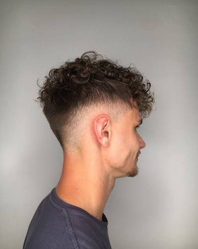
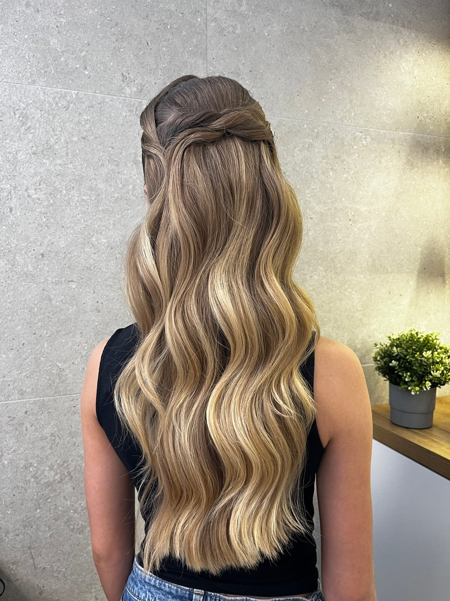

Moške frizure
- Klasično kratko striženje (Classic Cut): Brezčasna in urejena frizura, krajša ob straneh in zadaj ter nekoliko daljša na vrhu.
- Fade (Preliv): Zelo popularen stil, kjer se lasje ob straneh postopoma krajšajo od vrha glave proti koži.
- Undercut: Izrazito krajši ali obriti spodnji deli las, medtem ko so zgornji lasje bistveno daljši in počesani nazaj ali na stran.
- Moderni Crop: Kratka in teksturirana frizura s kratkim, ravno postriženim frufrujem naprej.

Ženske frizure
- Bob in Lob (Long Bob): Elegantna in vsestranska kratka do srednje dolga pričeska z ravno ali rahlo postriženo linijo.
- Dolgi večplastni lasje (Layers): Striženje na več plasti, ki dolgim lasem doda volumen, gibanje in lahkotnost.
- Pixie frizura: Drzna, kratka in lahko vzdrževana mladostna frizura, ki lepo poudari obrazne poteze.
- Zavesasti frufru (Curtain Bangs): Priljubljen frufru, ki je na sredini razdeljen in mehko uokvirja obraz.

Barvanja
- Balayage: Tehnika ročnega nanašanja barve za ustvarjanje naravnega videza sončnih pramenov in mehkih prehodov.
- Klasični prameni (Folije): Tradicionalna tehnika svetlenja posameznih pramenov las od korenin do konic za večjo svetlost in kontrast.
- Enobarvno barvanje (Klasika): Celostni nanos ene barve za popolno prekrivanje narastka, sivih las ali osvežitev celotnega odtenka.
- Preliv / Toner (Gloss): Poltrajnostno barvanje, ki lasem povrne sijaj, izboljša ton in nevtralizira neželene rumene odtenke.
Pri svojem delu uporabljamo preverjene profesionalne proizvode. Vse stvari naročujemo na Frizerska oprema.